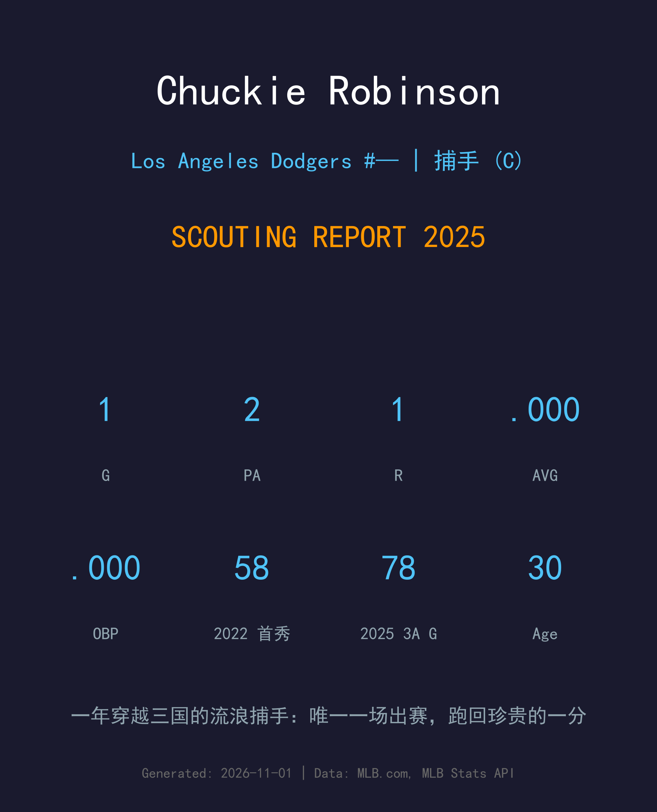
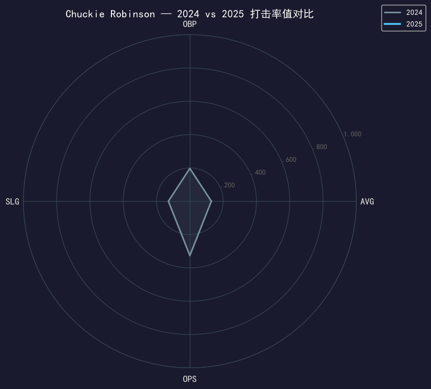
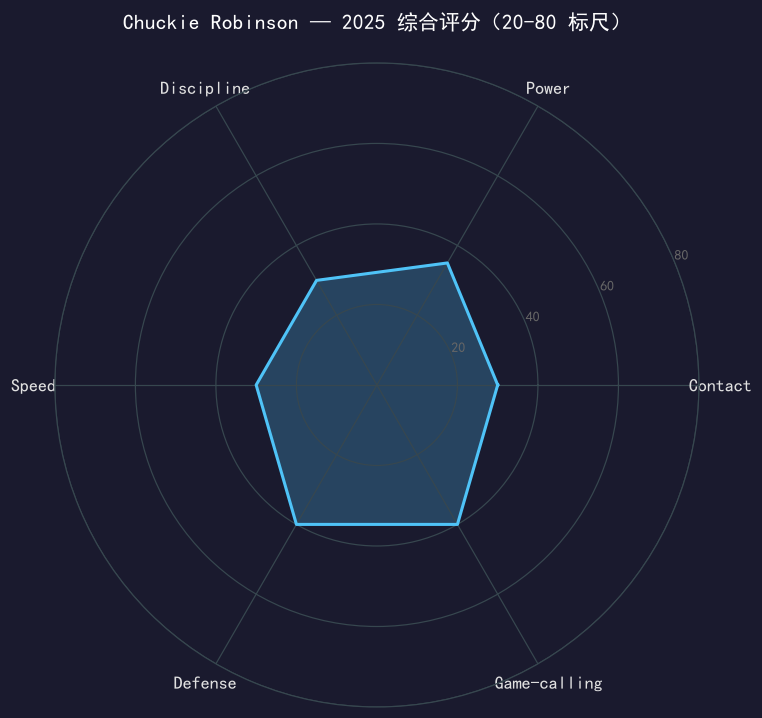

Los Angeles Dodgers | 捕手 | 右打 | 一年穿越三国的流浪捕手，唯一一场出赛跑回一分

⚠️ 极小样本警告：本报告基于 1 场 / 2 个打席的道奇段数据——这是 62 人名单中赛季数据最薄的报告，叙事价值远大于评估价值。
Chuckie Robinson 的 2025 年是一幅 waiver 线公路地图：天使春训（3A 盐湖城 27 场 .272）→ 5 月 28 日被 DFA → 5 月 31 日被道奇认领 → 6 月 3 日再被 DFA → 6 月 5 日 outright 奥克拉荷马城 → 9 月 6 日因扩编被选入 → 9 月 8 日下放 → 9 月 13 日再召回 → 9 月 16 日再下放 → 9 月 21 日被亚特兰大勇士认领 → 9 月 29 日勇士召回 → 11 月 6 日成为自由球员。十个月内，他的球员档案被五个行政动作改写，穿过的球衣可以从加州排到乔治亚。
而在这一切的中央，是他 2025 年唯一一场 MLB 出赛：9 月的某个傍晚，他作为道奇替补捕手上场 2 个打席、1 个打数，没有敲出安打——但他跑回了 1 分。对于一个整年在 waiver 线上漂流的 30 岁捕手来说，这一分是全年 317 个小联盟打席的利息，也是他 2025 年 boxscore 上唯一的数字。
从 2025 年 11 月的视角看，Robinson 是 MLB 边缘生态的完整样本：三次大联盟机会（2022 红人 25 场、2024 红人 26 场、2025 道奇 1 场），三个赛季打击率均未破 .150，小联盟常年 .250+。他的棒球生涯由「被需要」三个字驱动——哪支球队的捕手群出现洞，他就出现在哪。11 月 6 日之后，他第一次完全自由地选择自己的下一站。
2022 年 8 月 24 日在辛辛那提登上大联盟，首个赛季 25 场出赛——八年的小联盟长征（2016 年起）终于兑现成 MLB 球衣。
3A 路易斯维尔 101 场 .290/.356/.450——这是他职业生涯数据最好的一年，也是「MLB 轮换捕手」梦想距离最近的一次。
9 月扩编窗口里唯一一场出赛：2 PA、1 AB、0 H、1 R。boxscore 上的一分，是他在道奇——也是 2025 全年 MLB——留下的全部痕迹。

| 赛季 | 队 | G | PA | AVG | OBP | SLG | OPS | HR | RBI | BB | SO |
|---|---|---|---|---|---|---|---|---|---|---|---|
| 2022 | CIN | 25 | 60 | .136 | .136 | .271 | .407 | 2 | 5 | 0 | 17 |
| 2024 | CIN | 26 | 76 | .129 | .197 | .129 | .326 | 0 | 0 | 5 | 20 |
| 2025 | LAD | 1 | 2 | .000 | .000 | .000 | .000 | 0 | 0 | 0 | 0 |
三个 MLB 赛季，52 场出赛，OPS .407 → .326 → .000——这不是下滑曲线，这是一份关于「MLB 边缘捕手的三次敲门」的记录。真正值得读的是他 MLB 与小联盟的分裂：三个 MLB 赛季 52 场打击率均未破 .150，而 3A 生涯常年 .250+（2025 年 .254、78 场）。这个鸿沟在 30 岁的门槛上已经没有太多时间弥合；他的价值从来不在打击区，而在蹲捕时。
Robinson 的 2025 年是大联盟 roster 行政学的活教材：认领 → DFA → outright → 选入 → 下放 → 召回 → 再下放 → 被认领，每一步都有明确的 roster 逻辑驱动（伤病、扩编、优先级）。全年 5 个体系（LAA/LAD/ATL + 两队 3A）的穿梭不是混乱，而是联盟深度市场的正常运转——他是那台机器里最耐用的一颗螺丝。这种球员的存在让争冠队敢于在九月放心使用主力捕手，因为他们知道 waiver 线上永远有一个 Robinson 在待命。
球探报告写打击数据，但 Robinson 的雇主买的是另一套账本：蹲捕指挥、投手群安抚、速球局数承接。2025 年他在三个组织的 3A 累计出赛 78 场、317 个打席——这些是没有任何 MLB boxscore 会记录的价值。道奇 9 月把他选入再放下，不是因为他的棒子，而是因为 Barnes/Smith 轮休日的每一分每一秒都需要一个「不会让投手紧张」的名字。他的 2 个打席只是这份工作的收据。
11 月 6 日他选择成为自由球员——这是他职业生涯第一次主动按下按钮而非被动等待 waiver。30 岁对捕手是一道真实的门槛：阻挡的膝伤累积、速球应对的反射下降，都让「下一个机会」的报价单越来越薄。他的 2026 可能是最后一份 MLB 体系合约，也可能是海外联赛或转任教练的起点。无论走向哪，52 场 MLB 出赛和那一分，已经足够 Danville 的少年吹牛一辈子。

流浪捕手的赛季注脚：两分打席，一分得分
C 级 / 深度捕手与 3A 导师
道奇 2025 季后赛夺冠之路：外卡 2-0 红人 → NLDS 3-1 费城人 → NLCS 4-0 酿酒人 → 世界大赛 4-3 多伦多蓝鸟。
Robinson 与道奇的季后赛没有交集——9 月 21 日勇士的认领早就把他的赛季引向了乔治亚。有趣的是命运的环形结构：他 2025 年 MLB 唯一的得分来自道奇，而道奇夺冠那周，他刚在 Gwinnett 的 3A 赛季末战里收拾好护具。11 月 6 日他选择自由身——这是生涯第一次，他可以自己挑下一支需要捕手的球队，而不是等 waiver 线替他决定。
Robinson 的 2026 年从自由球员市场开始，他的目标读者只有一类人：需要「即插即用 backup 捕手」的球队棒球运营部。理想的报价单是一份带春训邀请的大联盟合约（一年 100-150 万美元区间）；更现实的剧本是 3A 合约 + 六月 roster 电话。30 岁的捕手历史上不乏第二春（ backup 位置的寿命比先发长得多），前提是膝盖和肩肘在 2026 春训前给出绿灯。
理想剧本：拿到 backup 捕手合约，赛季接满 50 场 MLB
现实基准：3A 导师 + 九月扩编电话，延续流浪地图
下行可能：转向教练/球探岗位——他的经历本身就是教材
Chuckie Robinson 来自伊利诺伊州东部的 Danville，2016 年在红人体系开始职业生涯。他的爬升路线是典型的「板凳捕手长征」：九年小联盟生涯累计出赛近 700 场，从 Dayton 到 Pensacola 再到 Louisville，一年一个城市的接力。2022 年 8 月 24 日，28 岁的他终于穿上大联盟球衣——比大多数捕手晚，但比大多数追梦人早。
2023 年他在 3A 打出 .290/13 轰的生涯年，那个赛季结束后他以为自己终于站稳了；2024 年 26 场 .129 的回答把他打回原形。2025 年的流浪开始了：天使、道奇、勇士，三个组织的训练馆、五套不同的投手名单、无数次凌晨的航班。他的行李永远半收半放。
2025 年 11 月的 Chuckie Robinson 是一名自由球员。从 Danville 到盐湖城到洛杉矶到亚特兰大，他的 2025 年在 boxscore 上只留下一行：1 场、2 打席、1 分。但 waiver 线上的人都知道这行的分量——那个跑了 317 个 3A 打席、接了 700 多局、在五个体系间无缝切换的捕手，值得这一分，也值得下一通电话。